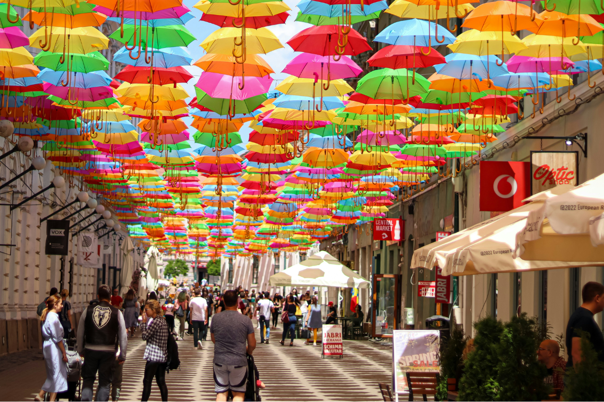
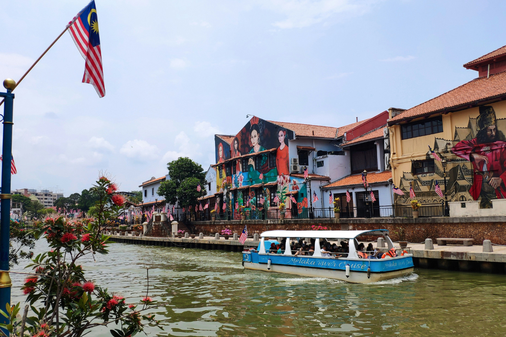

Batu Caves
Batu Caves is one of the most famous Hindu religious landmarks in Malaysia. Located near Kuala Lumpur, it features a massive golden statue of Lord Murugan and colorful steps leading to limestone caves that house several temples.
Visitors climb 272 steps to reach the main cave where religious ceremonies and prayers take place. During the Thaipusam festival, thousands of devotees and tourists gather here, creating a vibrant spiritual atmosphere.

George Town, Penang
George Town is a UNESCO World Heritage Site located on Penang Island and is well known for its unique blend of history, culture, and architecture.
Visitors can walk through the historic streets and explore museums, heritage houses, and vibrant local markets. George Town is also famous for its lively food culture.

Malacca Heritage City
Malacca, also known as Melaka, is one of the oldest historical cities in Malaysia and is recognized as a UNESCO World Heritage Site.
Famous attractions such as A Famosa Fort, Christ Church, and Jonker Street offer visitors a glimpse into Malaysia’s rich historical past.

Sarawak Cultural Village
Sarawak Cultural Village located near Kuching is often called the “Living Museum of Borneo.”
Visitors can explore traditional longhouses, watch cultural performances, listen to traditional music, and learn about local handicrafts.

Kek Lok Si Temple
Kek Lok Si Temple in Penang is one of the largest Buddhist temples in Southeast Asia.
The temple complex includes a seven-tier pagoda and a towering statue of the Goddess of Mercy.

Thean Hou Temple
Thean Hou Temple is one of the largest Chinese temples in Southeast Asia. Located in Kuala Lumpur, it is dedicated to the sea goddess Mazu.
Its beautiful lantern decorations and traditional architecture make it a popular cultural and spiritual destination.

Istana Negara
Istana Negara is the official residence of the King of Malaysia located in Kuala Lumpur.
Visitors often stop outside the palace gates to watch the ceremonial guards and admire the impressive architecture.